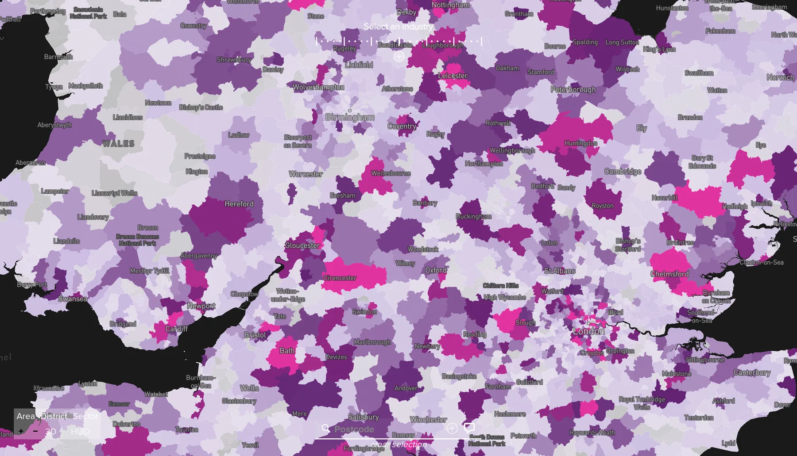

Hit £1M first-year target, in 91 days
Starcount built a clever dataset of their own, and had rights to data nobody had monetized before, including Twitter's first-ever data deal. But all that data wouldn't become a product, until I made it lie.


Head of Product Design, the company’s first designer. Audience intelligence, desktop web, sold into enterprise. I ran discovery across data, engineering, sales and client interviews, and grew the team from one to four within months. 2017-19.
context
Social listening 2.0.
Starcount started where many did: social listening. The difference was a layer of inference on top, teasing out relations between what people follow and what they actually care about. Relations advertisers pay for.
The trouble was the medium. All that insight flowed through one product, The Observatory, with a single real client: Starcount’s own consultancy, which packaged the findings into reports for big brands. The company wanted out of the report business, and into a product clients could drive themselves.
If A follows B,
and B follows C,
A might have an interest in C too.
product strategy
Three datasets, one vision.
I overhauled the existing product first, and it caught on with real users, shifting the company’s identity from consultancy to product. This led to two landmark data deals: Twitter, and Royal Mail.
Each was primed for its own product. But I saw one product. Our main data already did the 1-2 punch: you like this, you might like that. That gave us data confidence and depth. ~20 million UK tweets a day gave us a heartbeat: interests refreshed daily. And the final piece, crossing location metadata with real-world deliveries, on every UK postcode. A live map of what Britain wants.
iteration
A starved audience.
Most of our clients were still using 90’s software, so when they saw our rough proof of concept, they wanted it on sight. Acknowledging that market need, iterations ran equal parts function and polish, all of it anchored on real requirements.
Like the six-state toggle: refined and novel on the surface, doing a real job underneath, saving precious pixel estate on the small laptops sales reps carried to clients, while delivering file upload, processing, cancel, ON, OFF, and delete, all in one component.
feature design
Features, mapped.
Everything revolved around the map. Clients brought their data to map on top of ours. CRM and catchment files their stores already drew from. And feature requests like dropping a pin to set a bespoke geofence. Filters allowed the users to fine tune an audience, the summary pane updating live.
The map could even run the logic in reverse: hand it a market that already worked, and Lookalikes would suggest other areas with similar interests or behaviours.
Every iteration upgraded the look and feel too. Sales demoed my most up-to-date prototypes, so every pass of polish did double duty, sharpening the tool and keeping the prospect list eager and growing, even before the price was set.

data visualisation
I made the map lie, correctly.
From the start, the heatmap was one of the best received features. It was visual, and instantly familiar. On first load, users knew exactly what they were looking at. Sadly, it was unusable. An 8% nudge would shut down 90% of the country. Not helpful.
London is denser than everywhere else in the UK. That’s accurate. But clients looking to better target their marketing want to know where else, besides London, they can find new audiences. That’s helpful.
Accurate
Useful
So I worked with the Data team to rebalance it. Technically, that made the map wrong, the way a subway map is wrong: a projection chosen for the decision it serves.
prototyping
Riding the wave.
Rebalancing set it up. 3D sealed the deal.
Heatmaps have a limited set of colors. With the 3D extrusion, height was tied directly to value, and color became a secondary cue. And with the option to animate it, users could create waves, moving as trends: a peak of interest flowing north to south, in or out of London, or spreading out to neighboring areas. It made the map alive.
Our clients were sold on the draft. This was something unique, like nothing the industry had seen before.
impact
£1M in 91 days.
Audiences beat its first-year target of £1M in 91 days. The function I had joined as a solo designer reporting into engineering was now a four-person design department, driving product.
Accurate is a property of the data. Helpful is a design decision. That decision is what clients paid for. To others on my team, it looked like I was taking an unnecessary risk. To me, it was clear I was only doing my job. Design is about tradeoffs. It’s about creating something that has a place in the world. And that map had its place.